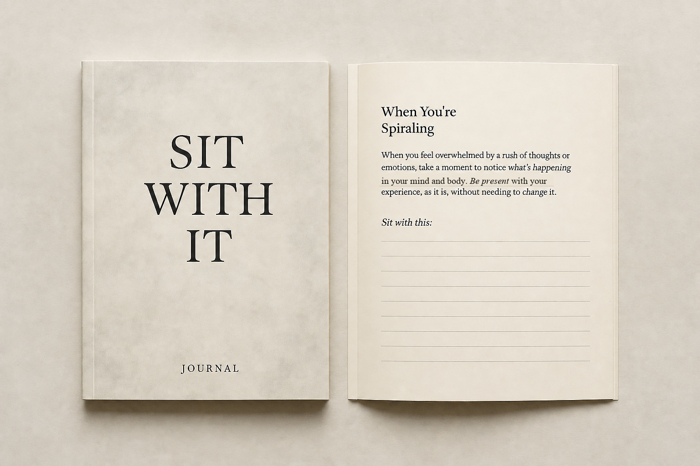

Four emotional entry points
Choose the part that feels closest rather than following a rigid sequence.
A guided journal for what you cannot rush
You just need somewhere honest to begin.
Open to the page that feels most like now. Take one prompt. Write a page, a sentence or a single word—and let the answer be incomplete.

Designed to feel like company, not homework.
For the moment when “I’m fine” is no longer quite true.
Open where you are
Choose the sentence that feels closest. The journal meets you there.
When every thought brings three more and your body needs somewhere solid to return to.
Read a page → 02When nothing seems to reach you and forcing a feeling would only push you further away.
Read a page → 03When you can feel a change before you can explain it, and need space to hear what it is asking.
Read a page → 04When holding on has become heavier than the thing itself, and release can happen a little at a time.
Read a page →A page for spiralling
What is the smallest true thing underneath all the noise?
The tone of the book
There is no programme to complete and no better version of you waiting at the end. The prompts help you notice what is present, come back to the body and answer only what feels possible today.
Open all five sample pages →How to use it
There is no correct pace, order or amount to write.
Open to the section that sounds most like the truth today.
Use a short grounding cue before asking yourself to explain anything.
A page, a sentence, a word or a mark all count. Stop when it feels enough.
You do not need to reach a conclusion. The page can hold what you cannot carry right now.
The physical journal
The final publication details are still being confirmed. What will not change is the purpose: a warm, tactile paperback with enough structure to help and enough space not to crowd you.
Choose the part that feels closest rather than following a rigid sequence.
Short sensory cues help you arrive before the prompt asks anything of you.
Enough guidance to begin, with room for silence, fragments and unfinished answers.
Designed to be given to somebody you love—or quietly kept for yourself.
To give or keep
A thoughtful thing to give during grief, change, uncertainty, a breakup or quiet overwhelm. Not an instruction to recover. Just a way of saying: you do not have to make sense before somebody sits beside you.
Hear when it is ready“The bedside-drawer version of a friend who does not need you to explain yourself first.”
“I made the book I wanted when I could not think my way out of how I felt.”— Rose Attridge
Why Rose made it
I am very good at making sense of complicated things. But sometimes trying harder only takes us further away from ourselves. Sit With It began as a way to stay beside an experience without turning it into a task.
I hope the finished journal feels less like being instructed and more like being accompanied.
More about Rose →A few honest answers
No. There is no streak, date sequence or expectation that you use it every day. Open it when you need somewhere to begin.
No. It is organised around four emotional states so you can enter where you are rather than where the contents page says you should be.
No. It is a reflective companion and does not replace professional mental-health care, diagnosis or treatment.
The final price, page count and publication date are being confirmed. The publication list will receive the details and first opportunity to order.
Publication list
Receive the sample pages, quiet publication notes and the moment the paperback is ready to give—or keep.